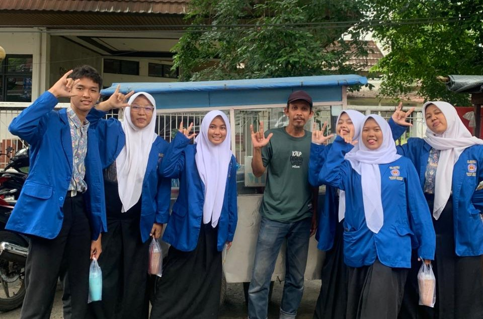

WEBSITE AURELStay weird, be different |
|
|---|---|
| Beranda Tentang Saya Sekolah Lagu | |
SMK Negeri 1 TangerangProfil Sekolah  SMK Negeri 1 Tangerang merupakan salah satu sekolah menengah kejuruan favorit dan berprestasi di Kota Tangerang yang terus berkomitmen mencetak lulusan siap kerja, berkarakter, dan berdaya saing tinggi. Sekolah ini menyediakan berbagai pilihan kompetensi keahlian unggulan yang relevan dengan kebutuhan dunia industri, seperti Desain Komunikasi Visual (DKV), Teknik Jaringan Komputer dan Telekomunikasi (TJKT), Teknik Instalasi Tenaga Listrik (TITL), Akuntansi dan Keuangan Lembaga (AKL), Manajemen Perkantoran dan Layanan Bisnis (MPLB), serta Pemasaran. Setiap program keahlian dirancang dengan kurikulum berbasis praktik agar para siswa tidak hanya menguasai teori, tetapi juga memiliki keterampilan teknis yang matang sesuai bidangnya. |
|